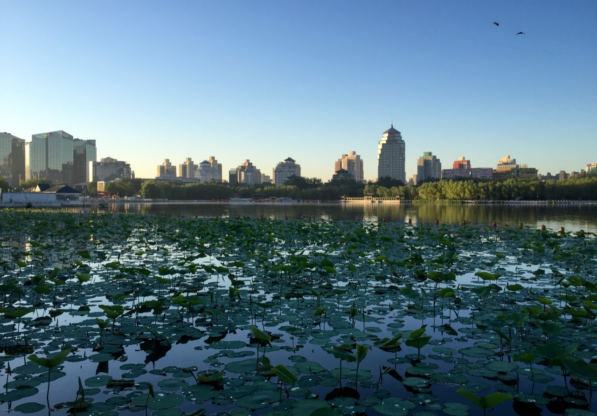
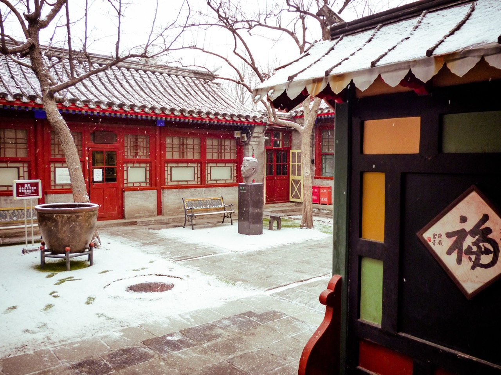
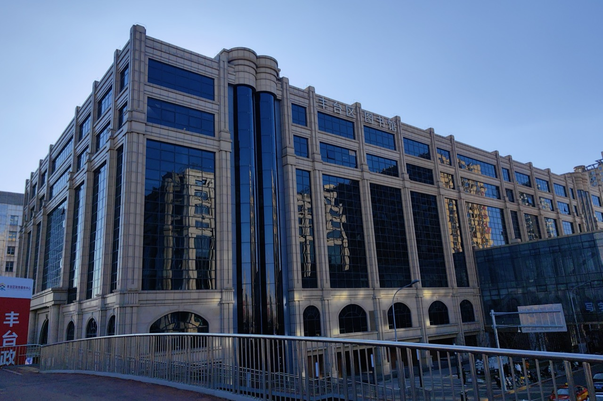
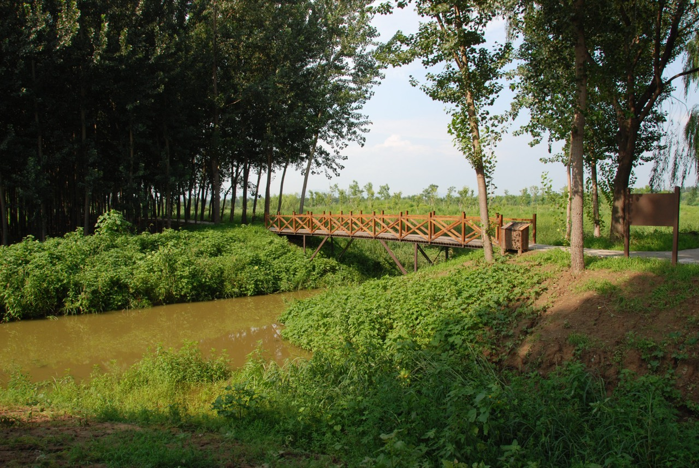

莲花池公园

作品：Morning at the Lotus Pond (20170524053512).jpg
摄影：N509FZ
拍摄日期（来源声明）：2017-05-24
.jpg){kind=link}
2017年莲花池公园历史影像，主体为园内水面、岸线与绿化；不代表场所全貌、现行陈列、季节或开放状态。
由来源原图等比例缩小，并进行JPEG压缩（质量参数72）；未裁切、重绘、去人物或换背景。成品为1280×893。页面按容器缩放、裁显；完整原图见来源。
照片及机械处理结果沿用各自标注的许可。保留原构图，仅按下列说明缩小和压缩。历史影像不代表当前开放、展览或季节；摄影者不因此为小程序背书。

作品：Morning at the Lotus Pond (20170524053512).jpg
摄影：N509FZ
拍摄日期（来源声明）：2017-05-24
2017年莲花池公园历史影像，主体为园内水面、岸线与绿化；不代表场所全貌、现行陈列、季节或开放状态。
由来源原图等比例缩小，并进行JPEG压缩（质量参数72）；未裁切、重绘、去人物或换背景。成品为1280×893。页面按容器缩放、裁显；完整原图见来源。

作品：老舍故居内景.jpg
摄影：徐然宽
拍摄日期（来源声明）：2012-12-12
2012年老舍纪念馆历史影像，主体为北京老舍故居院落与建筑；不代表场所全貌、现行陈列、季节或开放状态。
由来源原图等比例缩小，并进行JPEG压缩（质量参数72）；未裁切、重绘、去人物或换背景。成品为1280×960。页面按容器缩放、裁显；完整原图见来源。

作品：丰台区图书馆 20251221.jpg
摄影：Huangchinhai
拍摄日期（来源声明）：2025-12-21
2025年丰台区图书馆大红门馆历史影像，主体为大红门馆建筑外观；不代表场所全貌、现行陈列、季节或开放状态。
由来源原图等比例缩小，并进行JPEG压缩（质量参数72）；未裁切、重绘、去人物或换背景。成品为1280×853。页面按容器缩放、裁显；完整原图见来源。

作品：Shunyi, Beijing, China - panoramio - jetsun (7).jpg
摄影：jetsun
拍摄日期（来源声明）：2009-07-25
2009年汉石桥湿地景区（开放游览区）历史影像，主体为湿地水面、岸线植被和木桥历史景观；不代表场所全貌、现行陈列、季节或开放状态。
由来源原图等比例缩小，并进行JPEG压缩（质量参数72）；未裁切、重绘、去人物或换背景。成品为1280×857。页面按容器缩放、裁显；完整原图见来源。


.jpg){kind=link}